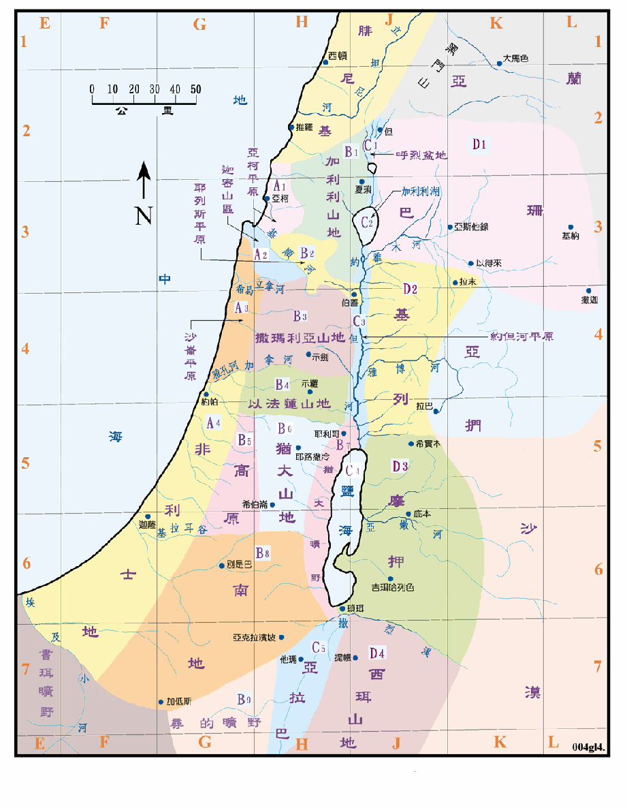

区域的划分有自然地区和行政地区两种，本图中所绘的是自然地区，是按照圣经所提到的名称和它的含意划分，所以并不完全符合按自然地理区分的原则。但是如果是以查考圣经历史为目的，相信是会较为直接和贴切的。
行政地区中常见到的是十二支派的疆域，请参考<书图11>。
自然区域的名字很多与政治区域的名字相同，但范围常有差异，请加以注意。
本图之大分区是从西向东，依次为沿海平原、中央山地、约但河裂谷和东部山地，然后由上往下排列。